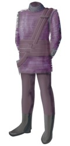
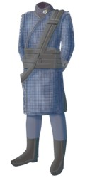
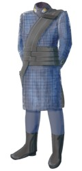

|
Tandarani
|
Specie umanoide originaria di
Tandar I
caratterizzata da alcune placche sul setto nasale.
Nel 2147 i Tandarani hanno
cominciato a subire gli attacchi della Cabala Sulibana. Da allora le diverse
migliaia di
Sulibani presenti nello spazio tandarano, da sempre ben integrati nella
società, sono stati divisi in gruppi e trasferiti a forza in oltre 26 campi di
concentramento su pianeti isolati. In questi campi, malgrado la rigida
disciplina e gli effetti della separazione delle famiglie, i
Sulibani non vengono costretti ai lavori forzati ed hanno comunque la
possibilità di esprimersi creativamente attraverso la scrittura, la pittura o
altri metodi. I Tandarani ritengono di aver dovuto internare i
Sulibani per il loro stesso bene, in quanto dopo gli attacchi della
Cabala si erano verificati nei territori tandarani diversi atti di violenza e
omicidi di Sulibani innocenti.
Esercito tandarano
Alcune uniformi dell'esercito tandarano:
| Soldato |
 |
| Maggiore |
 |
| Colonnello |
 |
Alcuni gradi dell'esercito tandarano: